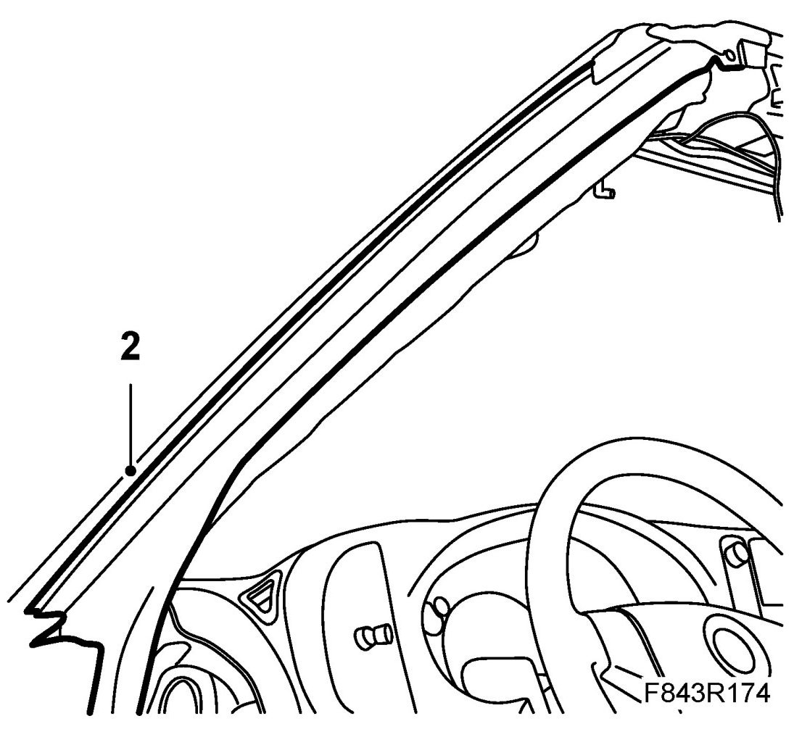
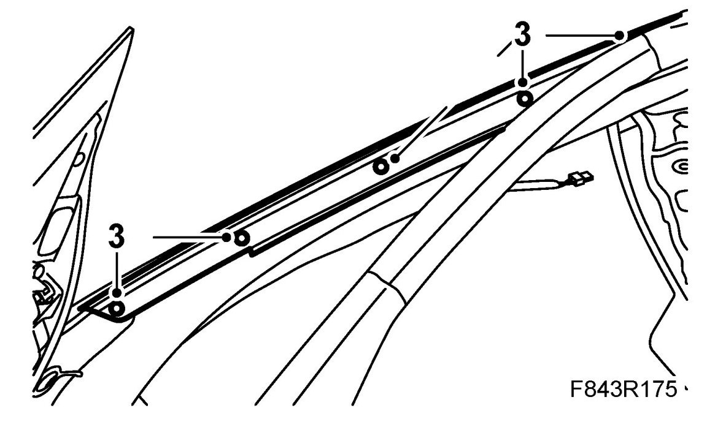
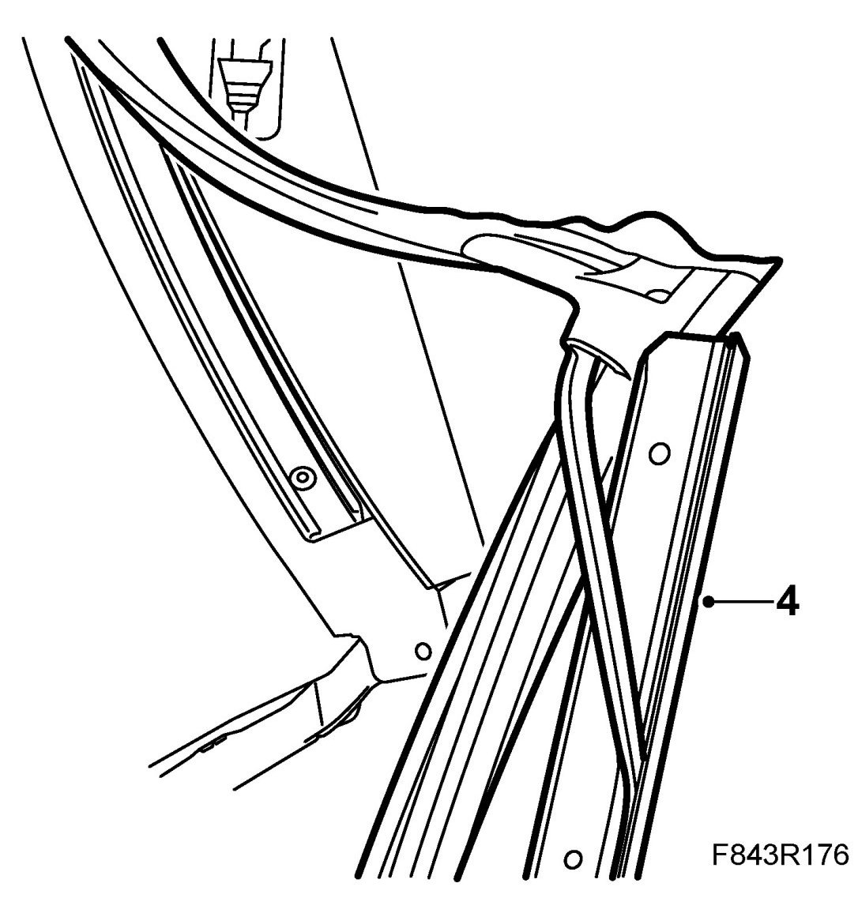
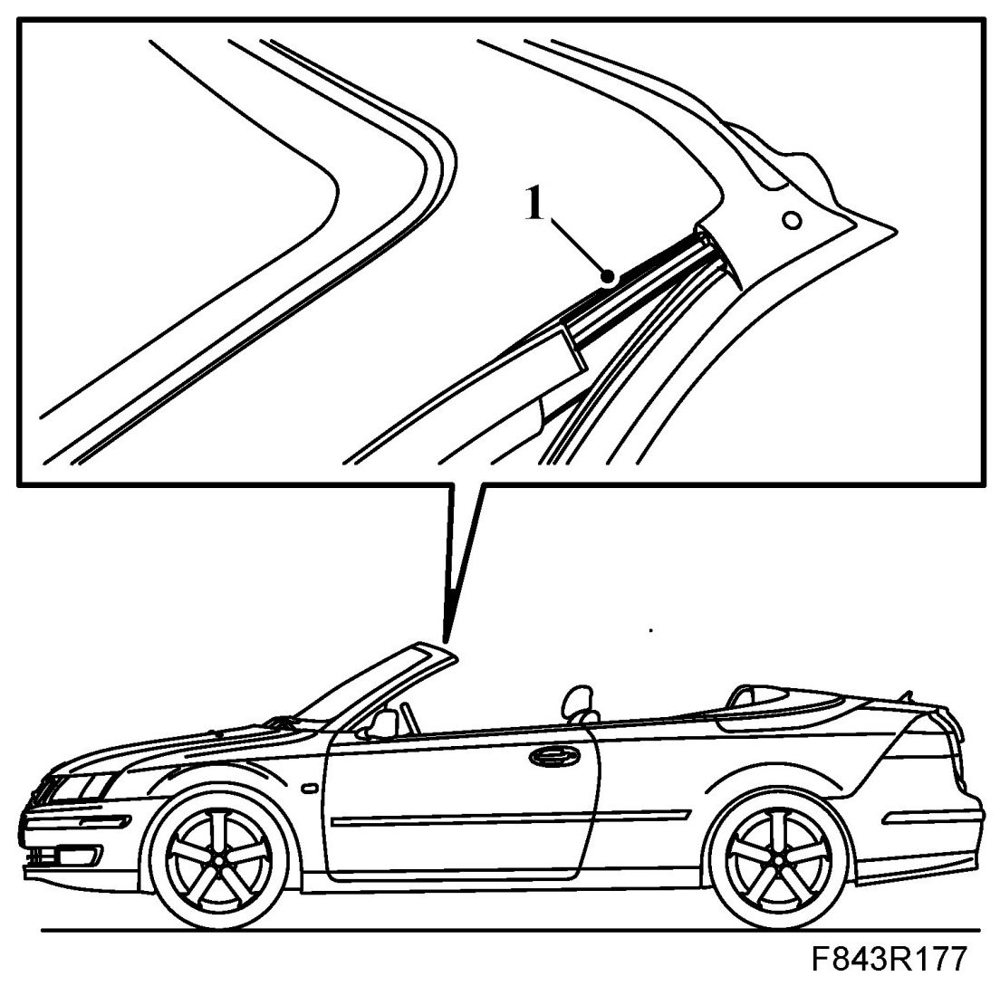
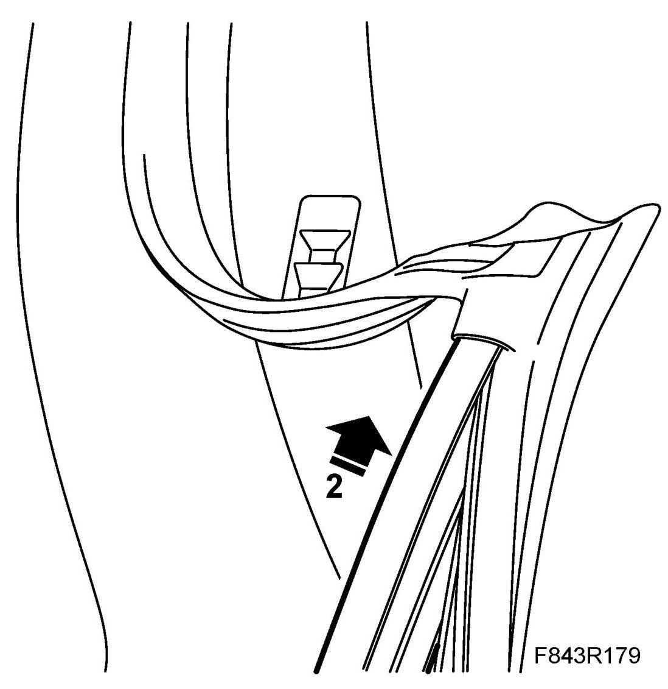
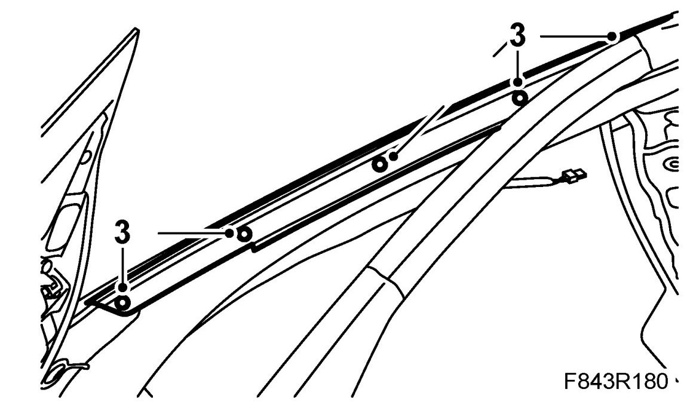
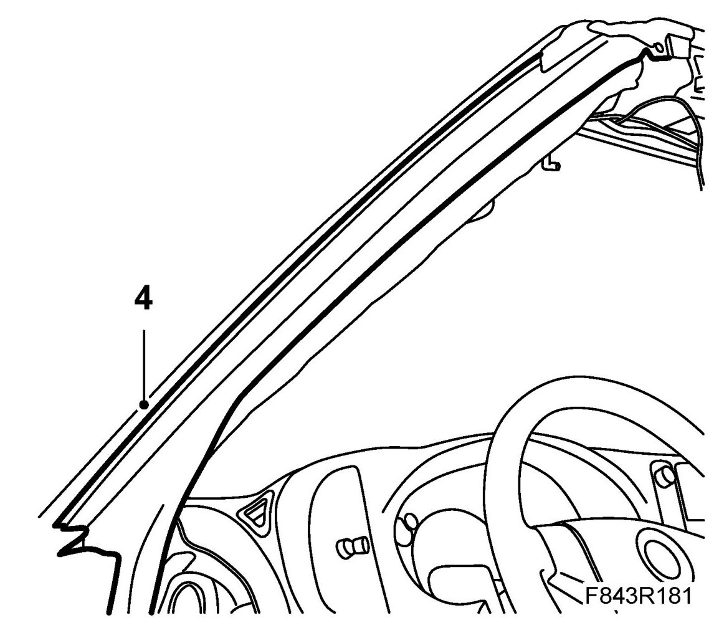

Windshield Moulding / Trim: Service and Repair
The A Pillar Trim Moulding, CV
To remove
1. Retract the soft top.
2. Pull out the windscreen frame seal from the A pillar trim moulding. Start at the bottom edge.

3. Undo the screws from the A pillar seal mount. Remove the mount.

4. Pull out the trim moulding from the corner of the rubber moulding and pull away the thin rubber moulding.

To fit
1. Fit the thin rubber moulding on the inside of the A pillar trim moulding using the removal tool. Start to fit from the lower edge.
NOTE: Do not stretch the rubber moulding during assembly.

2. Push the trim moulding into the corner of the rubber moulding.

3. Fit the trim moulding screws.

4. Fit the windscreen frame seal into the A pillar trim moulding by pushing it in place. Use the removal tool. Ensure that the seal is correctly located against the instrument panel and the bottom section of the door seal.

NOTE: Ensure that the lower U-profile of the moulding is fitted behind the metal edge of the A pillar.
5. Check the fit of the moulding.
Cars with pinch protection: Perform Calibration of pinch protection